Mosaikkunst med dine egne billeder
Ét billede.
Tusind minder.
Dit kunstværk.
Gør dit yndlingsbillede til en mosaik af alle de små øjeblikke, der betyder noget. På afstand ser du det store motiv. Tæt på ser du dine egne billeder.
- Gratis at prøve
- Dine billeder bliver på din egen enhed
- Vælg materiale bagefter
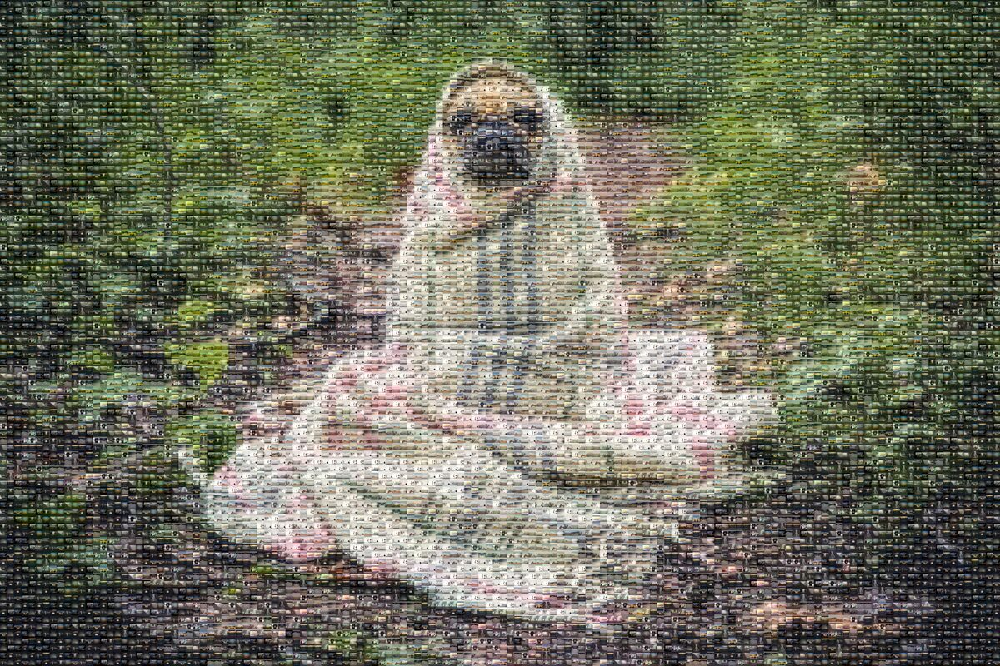
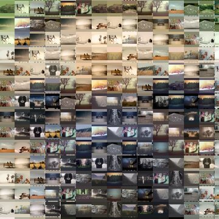
Sådan gør du
Enkel at lave. Sjov at gå på opdagelse i.
-
Vælg dit hovedbillede
Det store motiv, man ser på afstand. Et portræt, et kæledyr eller et logo med tydelige farver virker godt.
-
Tilføj dine billeder
Alle de små billeder, mosaikken bygges af. Vælg mange på én gang. Jo flere forskellige, jo flottere.
-
Vælg størrelse og fortsæt
Se mosaikken, zoom ind og justér den. Fortsæt derefter til produktet, hvor du vælger materiale.
Før og efter
Samme billede. Nu fortalt med 48 andre.
Dette eksempel er lavet med mosaikværktøjet på denne side. Hovedbilledet er en mops i et tæppe. Mosaikken er bygget af 48 forskellige fotos.
Vil du prøve med de samme billeder? Brug knappen Prøv med eksempelbilleder ved mosaikværktøjet.
Idéer
Ét motiv. Mange historier.
Et kæledyr, et menneske eller et logo. Til venstre er hovedbilledet, og til højre er den færdige mosaik. Det lille billede viser mosaikken tæt på.
-
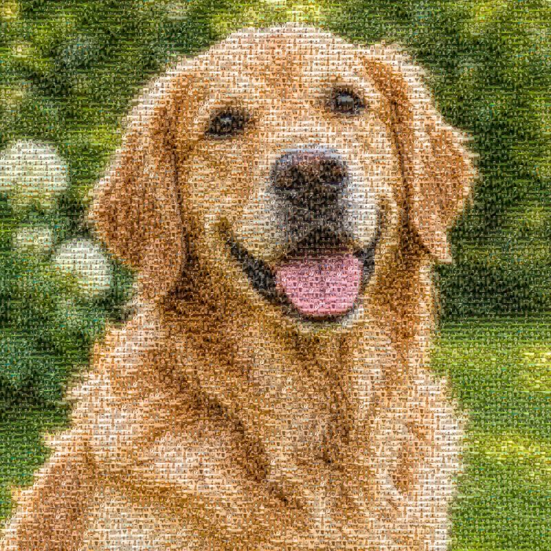
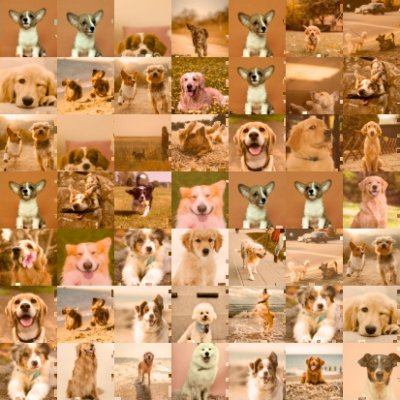
Kæledyr
Dit kæledyr. Alle jeres øjeblikke.
Brug et tydeligt portræt som hovedbillede. Fyld mosaikken med billeder fra gåture, leg og ferier.
-
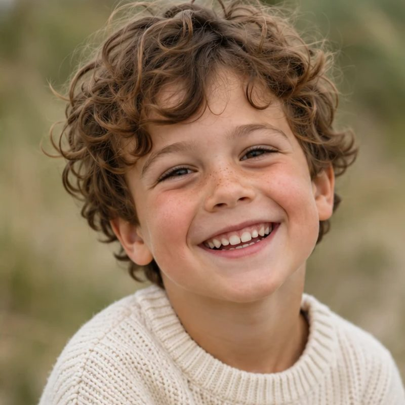
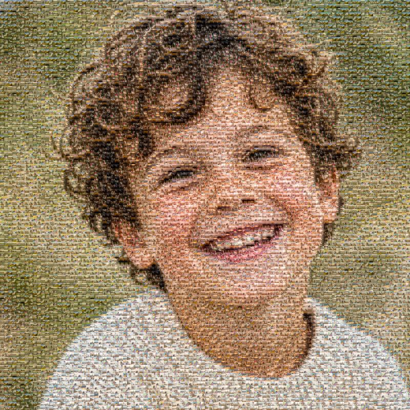
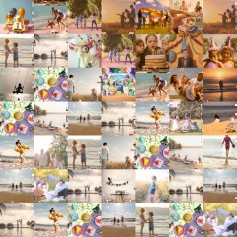
Børneportræt
Ét portræt. En hel barndom.
Saml fødselsdage, ferier og hverdagens små øjeblikke i ét billede. En god gave til bedsteforældre.
-
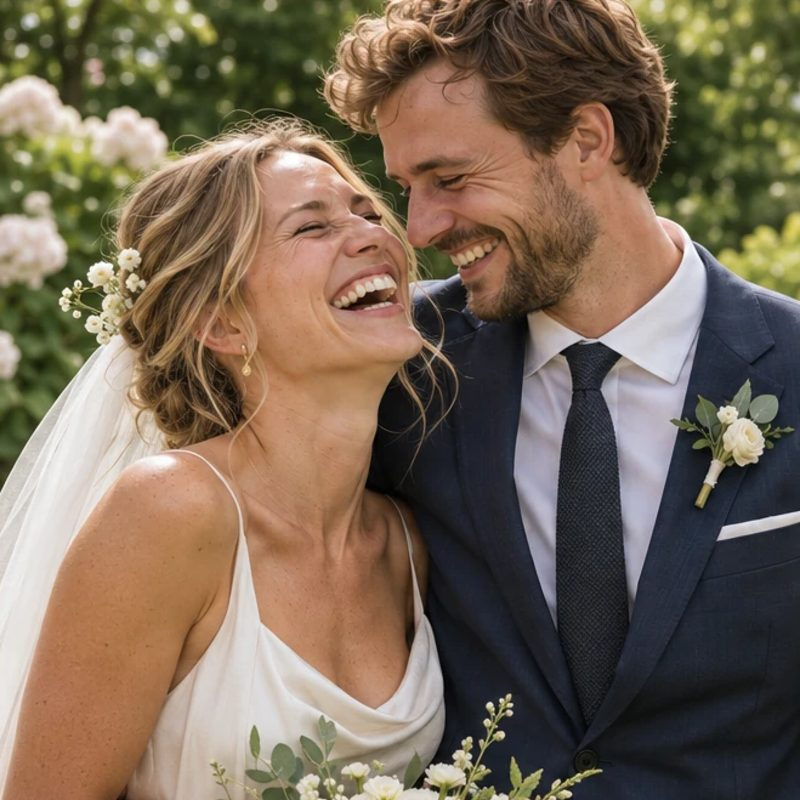
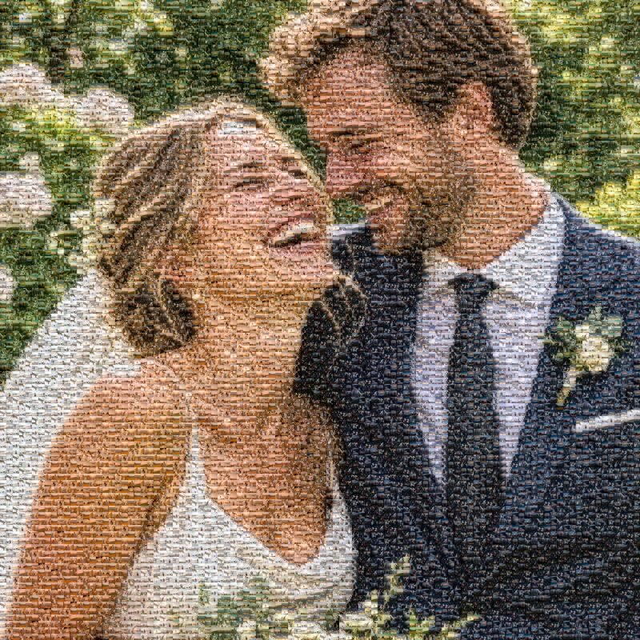
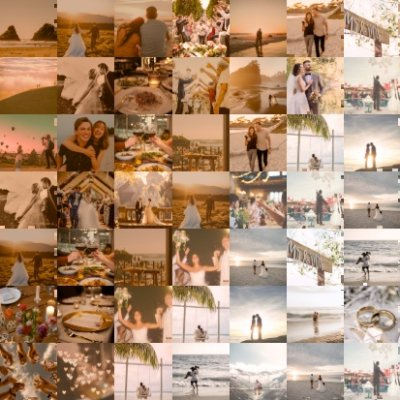
Bryllup
Jeres dag. Hele historien.
Bryllupsbilledet som det store motiv. Jeres rejser, familie og venner som de små billeder.
-
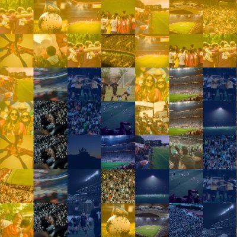
Klub og forening
Din klub. Jeres fællesskab.
Klublogoet som hovedbillede. Medlemmernes billeder fra kampe, træning og fester som brikkerne. Her vist med et opdigtet klubmærke.
-
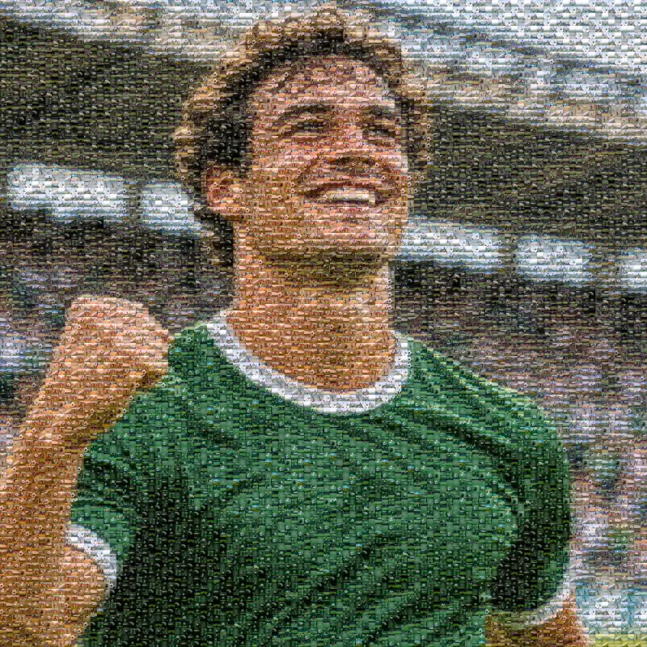
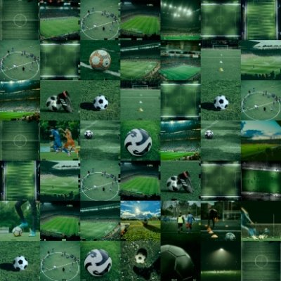
Sportsportræt
Din fodboldhelt. Dine fodboldminder.
Et spillerportræt bygget af kampdage, træning og livet på banen. Her vist med en opdigtet spiller.
-
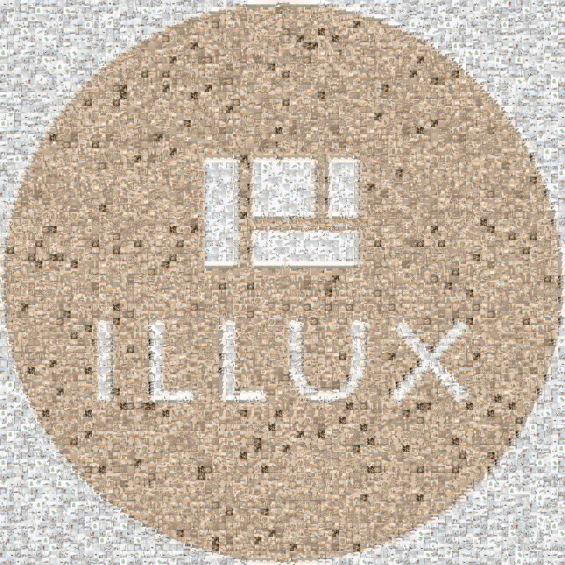
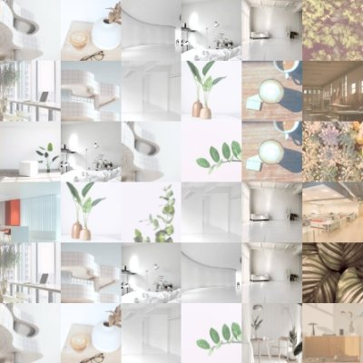
Virksomhed og jubilæum
Ét logo. Alle dem bag.
Virksomhedens logo bygget af medarbejdere, projekter og milepæle. Her vist med vores eget logo.
Alle mosaikker her er lavet med mosaikværktøjet på denne side, i 100 × 100 cm. Hovedbillederne er AI-genererede illustrationer med opdigtede personer, et opdigtet klubmærke og ILLUX’ eget logo.
Godt at vide
Spørgsmål og svar
Hvad er forskellen på hovedbilledet og de små billeder?
Hovedbilledet er det store motiv, du ser på afstand. De små billeder er brikkerne i mosaikken. Dem ser du, når du går tæt på.
Hvor mange billeder skal jeg bruge?
Du skal bruge mindst 2 små billeder. Mosaikken bliver flottest med mange forskellige: gerne mindst 50 og helst 200 eller flere. Du kan bruge op til 1.000.
Hvilke billeder kan jeg bruge?
JPG, PNG og WebP på op til 40 MB pr. billede. Billeder fra en iPhone i formatet HEIC kan ikke bruges direkte. Vælg dem fra Fotos-appen, så laver iPhonen dem normalt om til JPG.
Bliver mine billeder sendt nogen steder hen?
Nej. Alt sker i din egen browser på din computer eller telefon. Ingen billeder bliver sendt til os eller andre.
Hvor stor kan mosaikken blive?
Du vælger selv størrelsen, fra 10 til 300 cm på hver led. Mosaikken får den kvalitet, der passer til størrelsen.
Hvordan får jeg den printet?
Når mosaikken er færdig, trykker du på "Fortsæt til produkt". Der vælger du materiale og ser din mosaik på produktet. Prisen afhænger af størrelse og materiale.